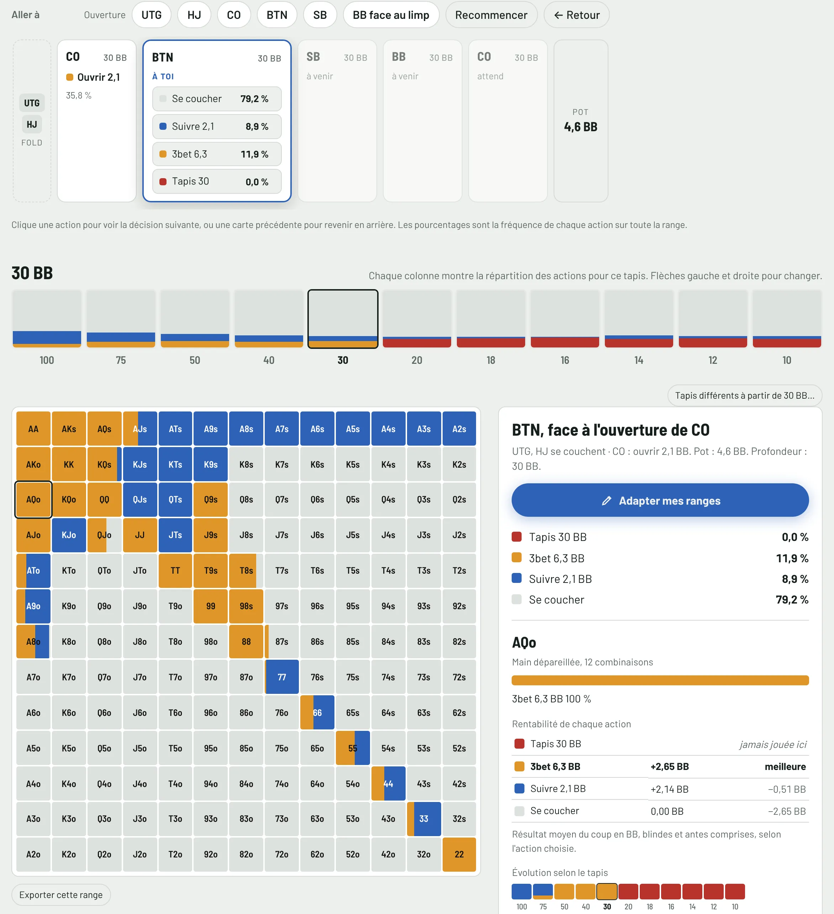
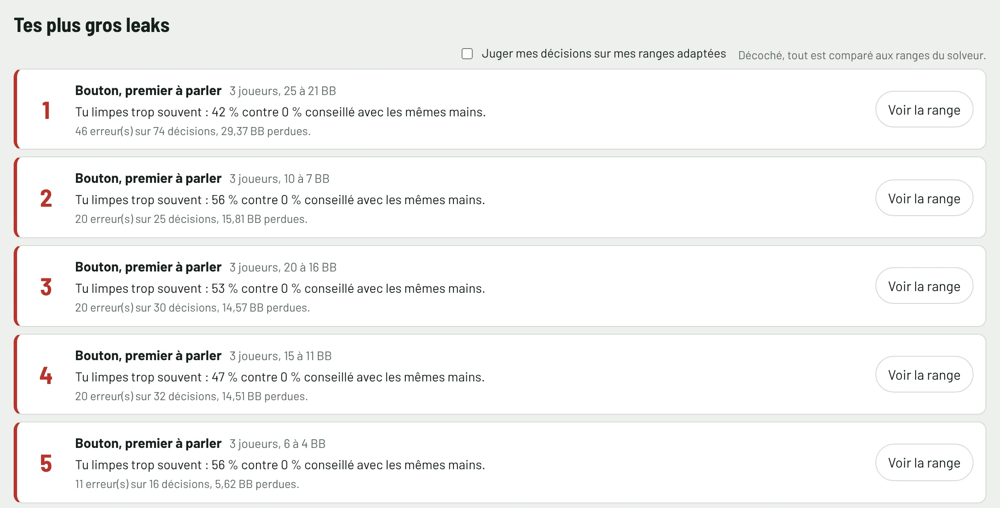
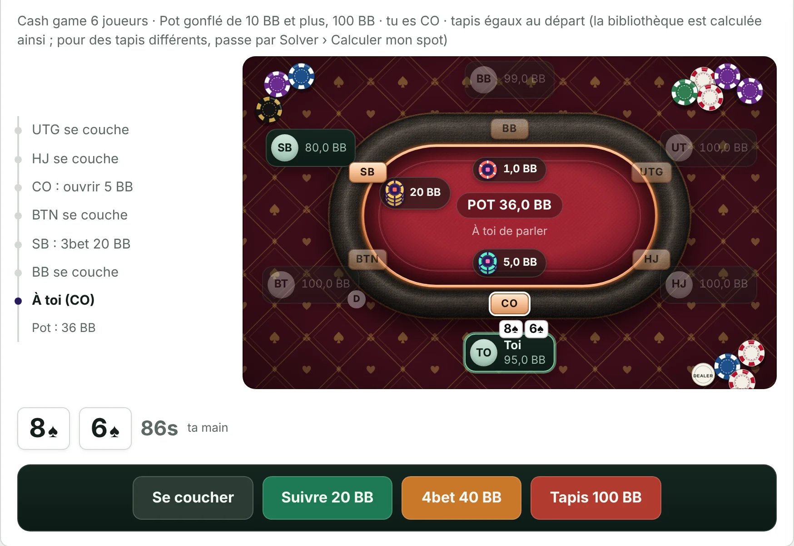

preflop solver · tracker · HUD
The right decision, hand by hand.
Solve It Poker prices every preflop option for all 169 hands in big blinds, in Spin, tournaments and cash games. Then it reads your real hands and shows where you stray from the calculation.
On a phone, tap a cell to read the hand and its action.
- All-in
- Raise
- Limp
- Fold
Pick your format, read your chart.
Spin, tournament or cash: the chart changes before your eyes, stack by stack. Click a hand to read what each action is worth.
| Format | Players | All-in | What's included |
|---|---|---|---|
| Spin and Expresso | 3-handed and heads-up | 25 → 2 BB | Winner-takes-all and jackpot with ICM |
| Tournaments | 5, 6, 7 and 8 | 100 → 10 BB | Antes, bubble and final table ICM |
| Trident | 3 | 60 BB and below | Table ante, Space KO in “Compute my spot” |
| Cash game | 6, 5 and heads-up | 100 BB · 40 → 200 BB | Winamax rake, Escape and Hold-up boosted pots |
Your exact stacks, progressive KO, Mystery KO and Space KO included, are computed in “Compute my spot”.
Solve
Replay the hand player by player.
Open, call, squeeze, 3-bet, 4-bet, all-in: each option shows its size and frequency, then how the hand changes with the stack.

Track
Then it reviews your real hands.
The tracker reads your Winamax and PokerStars hand histories and judges every preflop decision with the same numbers as the chart. Your leaks are ranked by what they cost, according to the model.

Training
Your mistakes come back in training.
The spots you missed, on a real table, with the correction. Ten free hands a day, no card needed. Unlimited in all three plans.

One calculation, from start to finish.
- 01Compute
A preflop equilibrium model over all 169 hands, every option priced in big blinds.
- 02Compare
Every decision in your hand histories, judged against that same calculation.
- 03Correct
Your mistakes come back in training, with the correction explained.
Postflop play is estimated by a model, not solved. We prefer to say so.
The plans, when subscriptions open
Try it for fourteen days, decide afterwards
Checkout is not open yet. When it opens, every plan starts with a 14-day trial, and you can cancel online in three clicks.
No plan renews unless you want it to. You cancel online in three clicks, without writing to anyone.
One plan, Spin, tournaments and cash games included
Track
Spin, tournaments and cash
€14.90/month
No commitment
- All your hands: Spin, tournaments and cash games
- Live tracking and a HUD you shape
- Opponents, notes and labels
- Leaks, seats and hand review
- Variance, EV, rake and winnings in euros
- Unlimited training, every format
Solve
Spin, tournaments and cash
€19.90/month
No commitment
- Spin 25 to 2 BB, tournaments 100 to 10 BB, cash games at 100 BB
- What each action is worth
- ICM, bubble, final table and progressive KO
- Opponent profiles by seat
- My ranges, exports and your exact spots
- Unlimited training, every format
Most complete
Improve
Spin, tournaments and cash
€29.90/month
Instead of €34.80
- Everything, in every format
- All of Solve and all of Track
- "See the range" from every mistake
- Mistakes judged against your own ranges
- Unlimited training, every format
Prices include VAT. Every plan covers Spin, tournaments and cash games, on two computers. You can switch plans at any time from your customer area.
Cancel online in three clicks: . Adults only.
Download Solve It Poker
Free to install: training is available right away, ten hands a day. The rest will unlock when subscriptions open.
Free to install: training is available right away, ten hands a day. The rest unlocks with the trial or the subscription.
Need a hand with installation or the HUD? Help and installation.
Frequently asked questions
Can I use Solve It Poker while I play?
The solver, no: it locks as soon as a table is open. The tracker and the HUD depend on your room's rules: until it allows Solve It Poker, don't use its HUD at that room's tables.
Which plan should I choose?
Track to analyse your hands and use the HUD, Solve to study ranges, Improve to get everything, with “See the range” from every mistake. Training is unlimited in all three.
Can I change plan during my subscription?
Yes, at any time, from your customer area. The difference is prorated on your next bill.
Which computers does it run on?
On Mac with macOS 12 or later, Apple or Intel chip, and on 64-bit Windows 10 or 11 PCs. A subscription works on two computers, one open at a time.
How do I install it?
On Mac, open the .dmg file and drag Solve It Poker into Applications. On Windows, run the .exe file. The step-by-step guide and the HUD permissions are on the page Help and installation.
How are the charts computed?
The equity of every match-up is simulated, then the CFR algorithm looks for the equilibrium of a simplified model of the game, tuned against reference charts. Postflop is estimated, not solved.
Which rooms does the tracker read?
Winamax: Spin, tournaments and cash, Escape and Hold-up tables included, with live tracking. PokerStars: hand history import and review after the session; the HUD at their tables awaits their approval.
Which hands does the tracker analyse?
Spin, 3- to 8-player tournaments and Hold'em cash games; Omaha is ignored. Preflop decisions are judged; after the flop, the tracker charts your winnings and EV without judging your decisions.
Do my euro winnings match my account?
Not necessarily: they come from the files on your computer. Games played elsewhere, or whose files were deleted, are not included. The exact balance is your room's cashier history.
How do opponent profiles work?
Each profile reproduces the stats of a player type. You pick the profile for each seat, and the solver computes the best response at that table. You can also seat an opponent from your tracker.
Do the ranges change with the buy-in?
No: a decision depends on stacks, blinds and the payout structure. The buy-in is used to show profitability in euros in jackpot mode. Opponents' habits are handled by the profiles.
Do I need an internet connection?
Not for computing: every grid and every analysis runs on your computer, without sending your hands. The connection is only used to check your subscription now and then.
Does the tracker send my hands anywhere?
No. Hand histories are read and kept on your computer. You can delete them from the tracker at any time.
How will the free trial work?
Right now: download the software, training is open for ten hands a day, no card and no time limit. When subscriptions open: a 14-day trial on the plan of your choice.
How does the free trial work?
Without paying: ten training hands a day. To try everything: 14 days on the plan of your choice, with your card. E-mail reminder before the end; if you don't cancel, the subscription starts.
How do I cancel?
In three clicks: “Cancel your subscription”, at the top and bottom of every page. You get an acknowledgement with the end date, and you keep access until the end of the paid period.
What happens to my ranges when my subscription ends?
You keep 30 days of read-only access to export them (image, PDF or text), then the app goes back to free training. Your hand histories stay on your computer.
Can I play or bet from Solve It Poker?
No. Solve It Poker is analysis software: it runs no games, takes no bets, holds no funds and connects to no poker site.
Is Solve It Poker affiliated with Winamax or PokerStars?
No. Solve It Poker is independent software, neither affiliated with nor endorsed by Winamax or PokerStars.